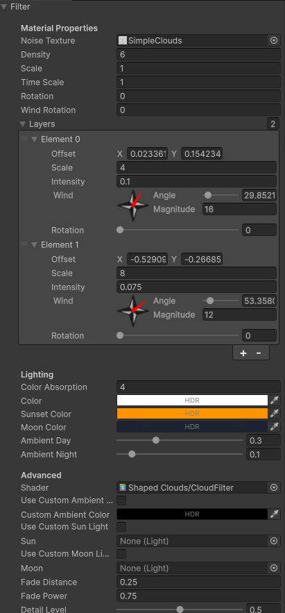
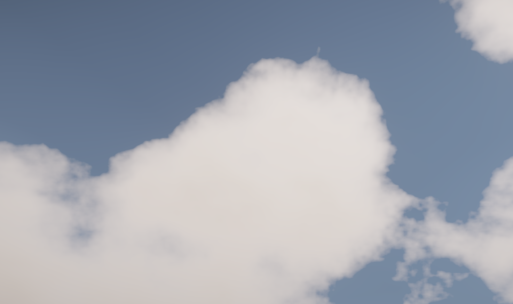
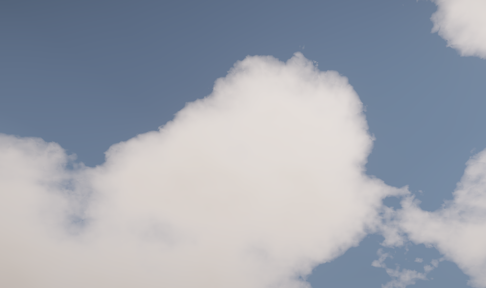
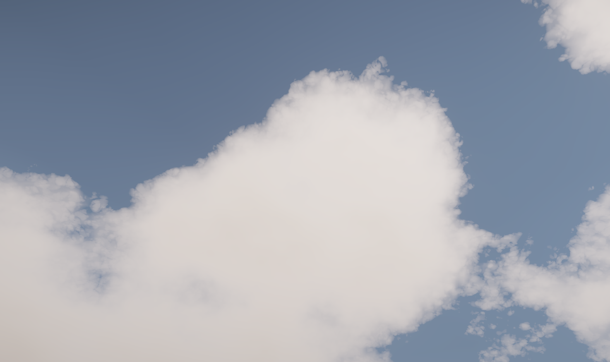
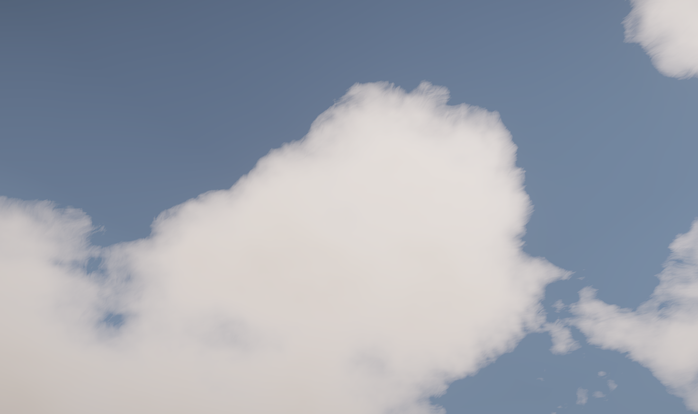

Cloud Filter
Collection of settings determining how the Base Texture is rendered to the Final Texture. Controls all lighting and the appearance of clouds.
Inspector Settings

Now, let's go over most of those fields and what they do.
Noise Texture/Density/Scale/Time Scale/Rotation/Wind Rotation/Layers/Shader
Effectively the same as in Base Noise Renderer and already covered in that page, with only the following differences:
- The noise generated isn't used to add clouds, but to remove them.
- This means clouds are always smaller in the Final Texture.
- This also means textures may not behave as expected.
- Negative intensity of layers WILL add clouds instead of subtract.
- Doing so is absolutely not recommended, as one of the optimizations made will get rid of fragments with 0 clouds in them, meaning that there's a limit to where clouds can be rendered.
- Density doesn't simply makes clouds smaller and more sparse, but it instead affects the actual density inside the clouds that light travels through.
- Higher density is more opaque, lower density is more transparent.
- This does not affect color, check the Color Absorption section below to see why.
To illustrate how the noise is used, since it's a meaningful difference, check out a few different textures included with the asset:




This noise has a relatively small range (mostly an even gray, rather than going from black to white), so intensity of layers had to be increased compared to other textures.
Also note that all of these screenshots were taken with full resolution for the Final Texture, which is generally only recommended if the details are needed to match the art style. Most games would probably benefit from lower resolutions, as the clouds being too detailed can be distracting and draw undesired attention to imperfections.
Color Absorption
The amount of light absorbed by the clouds (or, more accurately, being scattered away from the viewer), making them darker. Does something similar to what density would do, but it was separated from the density field for artistic purposes.
This way, it's possible to have very dense clouds that still don't look super dark.
Color
The color of the cloud itself, affects how the cloud receives light and reflects it.
Sunset Color
Multiplies the color of the Sun by this as it approaches the horizon. To disable this feature, set this color to white (1,1,1).
Moon Color
The color of the Moon. Only used when Use Custom Moon Light is disabled and/or no custom moon light was set.
Ambient Day/Night
Ambient Day is the amount of the light during the day that scatters around and hits clouds from indirect angles. A different way to think about it is that a percentage of the light from the Sun will become the minimum amount of color a cloud can have.
Ambient Night is the same as Ambient Day, but for the night and the Moon.
Both ignored when Use Custom Ambient Color is enabled.
Custom Ambient Color
When using custom ambient color, no calculations for it are done in the shader, and the color given will be used instead. This is generally more efficient, even if not a meaningful difference.
Mostly here because some games might want to take full control over ambient lighting.
Custom Sun/Moon Light
When disabled, the Sun is the main light of the scene (strongest directional light), same as most shaders, and the Moon uses the Moon Color field and the opposite direction of the Sun.
If using a custom Sun/Moon, the specified light will behave as that source of light, even if it's disabled. It'll be considered as a directional light even if it isn't, but it's recommended to make it easier by using a directional light.
A custom Moon can be very useful if your project simulates the Moon separate from the Sun (as opposed to doing exactly what this shader does by default).
A custom Sun can be useful if you have more than one directional light (like the Moon) and the Sun loses intensity as it sets. In that scenario, the directional light representing the Sun would reach 0 intensity when it's night, and other directional lights would become the new main light/Sun. By specifying a light as the Sun, you can prevent it from affecting clouds in weird ways.
Fade Distance
Distance from the horizon that clouds stop being visible. A value of 0 makes clouds fade and fully vanish at the horizon. A value of 1 makes clouds fully vanish only directly down.
Fade Power
When calculating the distance to the horizon, calculate the power of it by this exponent. Higher values make the fade longer, while lower values make it shorter.
Detail Level
As an optimization and artistic choice, the Cloud Filter doesn't always apply noise everywhere.
Regions too dense in clouds are unlikely to look any different with a little bit of noise subtracted from them. So, the filter simply skips sampling textures when over these dense regions.
This field controls at what point the filter decides not to add detail to a fragment. A value of 0 means never add any detail. A value of 1 means always add full detail.
Lower values will improve performance, especially in cloudy situations. Higher values aren't necessarily going to look better, as the detail will often be too grainy and evenly spread.
The recommended value is 0.5 or lower for big and dense clouds, since they usually only have any detail at all at their edges.